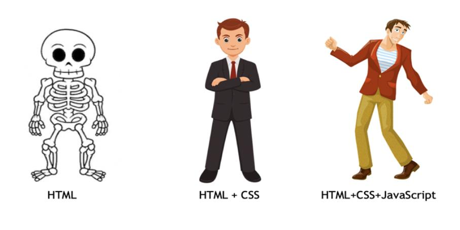

Como cada uma delas funcionam:
1- O HTML é a base da programação (como se fosse o esqueleto do corpo)
HTML é a abreviação para a expressão inglesa HyperText Markup Language, que significa Linguagem de Marcação de Hipertexto.
O HTML define o que vai em cima, o que é texto, o que é coluna, o que é imagem. Ele estrutura muito bem a página com início, meio e fim. Ou, se preferir, head, body e footer (cabeça, corpo e pé). Mas ele deixa a página feia, sem colorido. Tudo fica apenas um textão.

2- O CSS é o que dá estilo aos códigos (como se fosse a roupa que a pessoa utiliza)
Esta linguagem é como se fosse a roupa que o corpo usa. Ela vai dar cor, definir negrito e vai deixar a página mais atrativa e muito, muito mais bonita.
CSS – Cascading Style Sheets – é um mecanismo para adicionar estilo, cores, fontes, espaçamento, entre outras a um documento web. Em vez de colocar a formatação dentro do documento, o CSS cria um link para uma página que contém os estilos.

3- O Javascript é o que dá movimento e ação (como se fosse o espírito do corpo)
JavaScript é uma linguagem de programação criada para ser parte dos navegadores web, para que scripts possam ser executados do lado do cliente e interajam com o usuário sem a necessidade deste script passar pelo servidor, controlando o navegador, realizando comunicação assíncrona e alterando o conteúdo do documento exibido.
JS- é uma linguagem de programação interpretada estruturada

Saiba a História do JavaScriptEntenda quando e porque aprender cada um deles
Quando o assunto é programação ou desenvolvimento web, por onde começar? Esta é uma das perguntas mais feitas por quem está começando no ramo da tecnologia ou por pessoas que buscam agregar conhecimento para construir ou gerenciar os seus sites com mais liberdade e independência.
Afinal, muitas aplicações e plataformas são criadas com recursos como CSS e HTML, e qualquer um que queira personalizá-las de alguma forma precisa ser capaz de entendê-los.
Bem, primeiro, é preciso dizer que não existe uma regra para responder a essas perguntas. O que existe são alguns parâmetros que você pode levar em consideração para refletir e tomar uma decisão mais assertiva de acordo com a sua situação.
Talvez, nesse ponto, você já tenha consultado alguns cursos e viu que a maioria oferece um conteúdo relacionado ao HTML antes de qualquer outro. Isso não é à toa, o HTML é uma das linguagens de marcação mais antigas e simples, por isso faz sentido que ela seja introduzida primeiro.